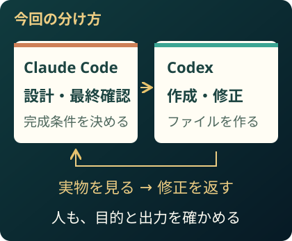
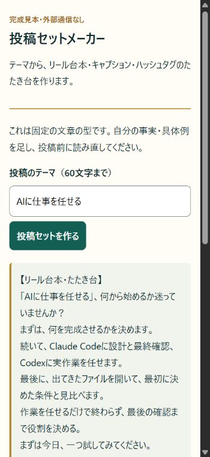
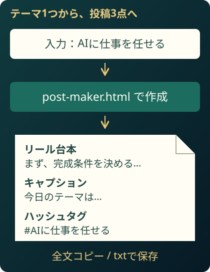
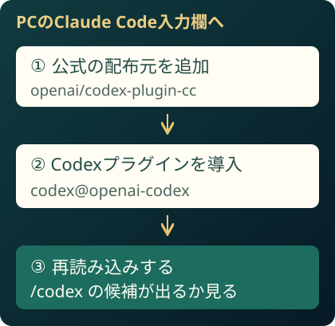
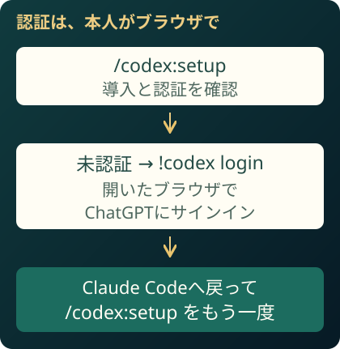
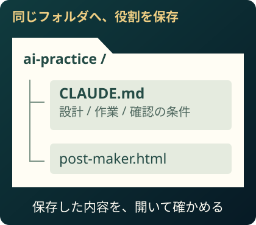
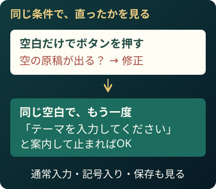

いそっち式 AI社員のつくり方

解説動画
動画を受け取り次第、掲載します。
下の図と完成見本で、先に実践できます。
2つのAIの受け渡しで、
手が止まる人へ。
Claudeで考えて、ChatGPTへ貼って、また戻して……。その行き来を減らしたいなら、Claude CodeからCodexに作業を渡す使い方を試してみてください。この特典では、連携を設定し、投稿づくりの小さなツールを1つ仕上げます。
僕はClaude Codeに全体の設計と最終確認、Codexに実際の作業を任せています。作業を渡すだけじゃなく、確認して直すところまでつなぐんです。

作るのは、投稿セットメーカー。
テーマを入れると、リール台本・キャプション・ハッシュタグのたたき台がまとまるツール。まず完成見本を触ってから、同じものをAIへ頼みます。

PC・スマホのブラウザで動くHTMLです。固定の型で下書きを作成します。自分の事実と具体例を加えて仕上げてください。

PCに、練習用の場所を作る。
PCで空のフォルダ ai-practice を作り、そのフォルダをClaude Codeで開きます。以後のコマンドは、Claude Codeの入力欄へ1つずつ送ります。
始める前に用意するもの
- 起動して使えるClaude Code。未導入なら公式セットアップから準備。
- Node.js 18.18以降。Codexが未導入なら、後のsetupで案内を確認。
- ChatGPTのアカウント。CodexとClaude Codeは、それぞれの利用条件・使用量枠で動きます。
連携後も上限はあります。モデルは自分の契約で利用できるものを使ってください。特定モデルの指定は、この連携の必須条件ではありません。
Claude Codeに、Codexを追加。

/plugin marketplace add openai/codex-plugin-cc/plugin install codex@openai-codex/reload-plugins導入画面では追加する内容と範囲を見て進めます。再読み込み後、/codex と入力して候補が出るか確認。
候補が出ないとき
公式配布元とプラグイン名を確認し、再読み込みします。まだ出なければClaude Codeを新しいセッションで開き直し、/plugin でインストール状態を確認してください。
ChatGPTのアカウントで認証。

/codex:setupCodexがなければ、表示された導入案内へ。未認証なら、次を送ります。
!codex loginブラウザでChatGPTにサインインしたら、Claude Codeへ戻って /codex:setup をもう一度。導入と認証の両方が準備できたかを見ます。
認証と使用量について
すでにCodexへサインイン済みなら、その認証が使われます。ChatGPTでのサインインとAPIキー利用では課金の扱いが異なります。ここではChatGPTのアカウントを使います。
作業を分けると使用量も分かれますが、総使用量が必ず減るわけではありません。行き来する情報や確認の回数も増えるためです。
役割分担を、フォルダに残す。

下の指示を送って、役割を CLAUDE.md に保存。返事だけで終えず、保存されたファイルと内容を開いて確かめます。
役割分担を保存する指示を開く
このフォルダでは、次の役割分担で進めてください。 ・Claude Code：目的の整理、全体設計、作業の指示、最後の確認。 ・Codex：ファイルの作成、実装、指摘された箇所の修正。 作業前に完成条件と変更するファイルを決め、Codexへ目的・入力・出力先・確認方法を渡してください。作業後は、Claude Codeが完成条件と実物を照合し、問題があれば具体的な修正をCodexへ返してください。修正後も同じ条件で確認してください。 確認と修正は最大3往復とし、解決しなければ未解決点を報告して止めてください。Codexが使えない場合は、連携できたと扱わず、その理由を伝えてください。 この役割分担を、このフォルダのCLAUDE.mdへ保存してください。既存の指示がある場合は消さず、矛盾する箇所を先に確認してください。保存後、ファイル名と保存した内容を示してください。 外部公開・投稿・購入・送信・権限変更は、作業の完成とは分け、実行前に僕へ確認してください。
「記憶」と、強制設定は違う
CLAUDE.mdは、次の作業でも読むための指示です。毎回必ず同じ挙動になる保証ではありません。次の依頼で役割を伝え直し、Codexの結果が返っていることも確かめます。
同じ投稿ツールを、AIへ頼む。
最初は機能を絞ります。テーマから3点を出す、コピーする、保存する。完成条件が決まると、Claude Codeも何をCodexへ渡すか整理できます。
ツールを作る依頼を開く
Instagramの投稿づくりを効率化したいです。 テーマを1つ入力すると、リールの台本・キャプション・ハッシュタグをまとめて作るツールを、このフォルダに作ってください。 完成条件： ・ファイル名はpost-maker.html。ブラウザで直接開ける、外部通信のないHTMLにする。 ・練習テーマは「AIに仕事を任せる」。固定の文章の型で、投稿のたたき台を作る。 ・リール台本、キャプション、ハッシュタグを分けて表示する。 ・全文コピーとUTF-8のtxt保存ができる。 ・空欄や空白だけなら作成せず、テーマの入力を案内する。 ・テーマに記号やHTMLのような文字があっても、文字として表示する。 ・本人の体験、売上、数字、成果保証を作らない。固定の型であることを表示する。 ・スマホ幅でも入力欄・ボタン・全文が読める。 いつもの役割分担どおり、設計と最終確認はあなた、実作業はCodexに任せて進めてください。 通常テーマ・空白だけ・記号入りの3種類を実際に確認してください。 修正があれば理由と修正箇所を記録し、完成したら出力ファイルの場所と使い方を3行で教えてください。
返ってきた post-maker.html をブラウザで開き、「AIに仕事を任せる」で作成。3種類が出るか、同梱の見本と見比べます。
進み具合や結果を見るコマンド
/codex:status は進捗、/codex:result は完了した結果。止めたいときは /codex:cancel。状態が分からないまま同じ仕事を重ねて頼まず、まず進捗を見ます。
出てきたものを、条件で確かめる。
AI同士にチェックさせるところまでが、この使い方です。「できました」の返事だけで終わらせず、条件と実物を見比べます。

確認する入力は、普通のテーマ・空白だけ・記号入りの3つ。図は、空白を通してしまった場合の直し方の例です。
確認と修正の指示を開く
post-maker.htmlの完成条件を、実物と照合してください。 1. テーマ「AIに仕事を任せる」で、3種類の原稿が出るか。 2. 空白だけでは作成されず、入力を案内するか。 3. テーマ「<テスト> & 確認」が文字として表示され、HTMLとして動かないか。 4. 全文コピーと保存したtxtが、画面の3種類の全文と一致するか。 5. 360px幅で読め、外部通信や未提供の体験・実績が混入していないか。 問題は、起きた条件・該当箇所・直し方をセットで示し、Codexに修正を依頼してください。修正後に同じ条件で再確認し、実行できなかった確認は分けて報告してください。
Codexに検査や修正を直接頼むとき
/codex:review は読み取り専用の検査です。修正まで行わせるなら、結果を読んでから /codex:rescue の後ろへ具体的な修正内容を続けます。
毎回の終了前に検査を通すレビューゲートは任意です。やり取りが長くなり、使用量を速く消費することがあるので、作業を見守れるときだけ使ってください。
/codex:setup --enable-review-gate/codex:setup --disable-review-gate投稿セットを保存して、1つ試す。
全文をコピーするか、txtで保存します。開いたファイルに3種類が揃っていれば、今回の出力はひとまず完成。自分の経験・事実を加え、声に出して読んでから使ってください。
- CLAUDE.mdに、役割と確認条件が残った
- post-maker.htmlが開き、3種類の原稿が出た
- 空白・記号入りでも意図した動きになった
- コピーと保存したtxtに、全文が入っていた
完成見本HTML・設定コマンド・指示文3点・投稿セット例・保存ガイド入り。ZIPを展開し、「保存ガイド.html」から開きます。追加のアプリやAPIキーは不要。連携の設定とAIへの依頼はPCのClaude Codeで行います。
まずは完成見本で1つ保存。次に、自分の練習フォルダへ同じツールを作らせてみてください。慣れたら、SNS台本、LP、集計レポート、下調べへ、任せる仕事を広げていけます。
任せる作業の次は、
SNS収益化の流れへ。
投稿のたたき台づくりを任せられるようになったら、次はその投稿をどう収益化につなげるか。僕の「いそっち式SNSマネタイズ〜7days〜」では、その流れを7日間の音声で学べます。
100円（税込）の音声教材を見る購入内容・条件は案内先で確認できます。